Introducción
En este espacio realizará un recorrido para entender la vida, los organismos, sus funciones e interacciones con el entorno.
1. Referente celular
1.1 Teoría celular moderna
La Teoría Celular Moderna es un pilar fundamental de la biología, formulada en 1838 por los científicos Schielden y Schwann.
Unidad morfológica:
Todo ser vivo está constituido por células.
1.2 Clasificación de las células
Las células se clasifican de acuerdo a su forma, tamaño y estructura.
Según su forma
Esféricas: células adiposas
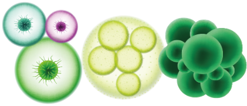Estrelladas: neuronas
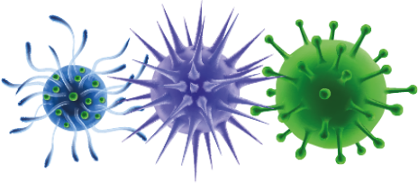Alargadas: fibras musculares
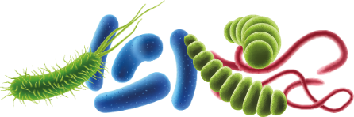Isodiamétrica: células vegetales amorfas (Sin forma). Ejemplo: Amebas
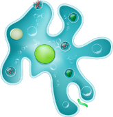Por su tamaño
Macroscópicas: aquellas que se aprecian a simple vista. Ejemplo: el huevo
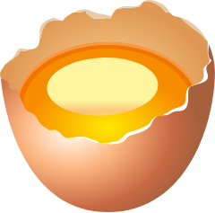Microscópicas: aquellas que se observan con ayuda del microscopio, siendo la unidad de medida la micra.
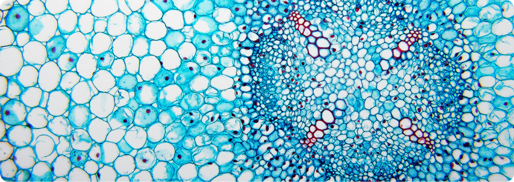Por su estructura y complejidad
Procariota: células simples sin membrana nuclear, ni organelos citoplasmáticos, excepto ribosomas
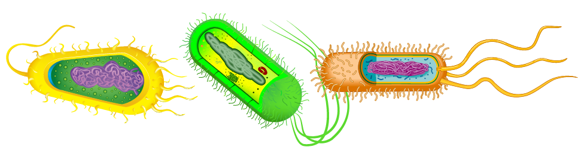Eucariota: células complejas con núcleo, pueden ser vegetales y animales
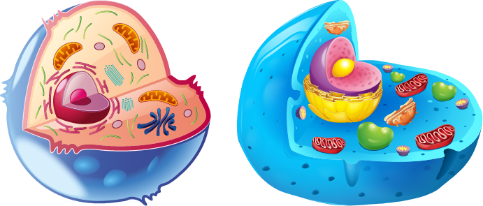1.3 Organelos celulares
Los organelos presentes en las células, difieren según sean estas procariotas, eucariotas, animales o vegetales.

Biblioteca digital. Lo invitamos a leer en el capítulo 3:
Rodríguez, M., Busch, M., & Dadón, J. (2010). De moléculas a células: Entendiendo la estructura de los seres vivos.
Para profundizar acerca de los organelos, puede dar clic en cada uno de ellos para conocer su información.
1.4 Niveles de organización de los Seres vivos
El mundo vivo puede organizarse en diferentes niveles:
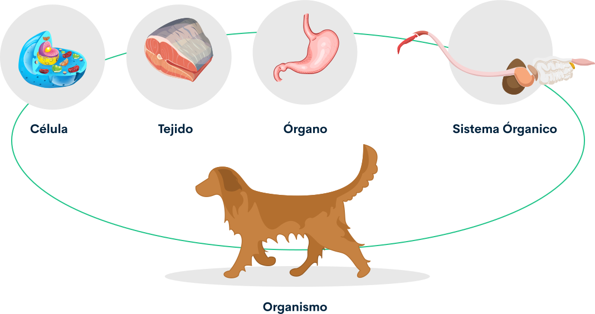-
Célula: se considera la mínima expresión de un ser vivo en cuanto forma y función
-
Tejido: es la reunión de células de la misma clase
-
Órganos: cuando se reúnen varios tejidos para cumplir una función en común
-
Sistema Orgánico: reunión de varios órganos que trabajan en equipo cumpliendo una función
-
Organismo: individuo formado por diferentes sistemas capaz de reproducirse.
Actividad didáctica: referente celular

¡Pon a prueba tu conocimiento!
La siguiente actividad tiene como propósito validar los conocimientos adquiridos sobre Referente celular
Iniciar2. Referente organísmico
2.1 Funciones vitales
Son todos aquellos procesos que los organismos tienen que realizar de manera periódica para mantenerse con vida.
Son comunes a todos los tipos de organismos vivos (a excepción de los virus), además de ser algunas de las características que más los diferencian de los seres inertes.
Tipos de nutrición
La siguiente imagen sintetiza las clasificaciones de los tipos de nutrición:
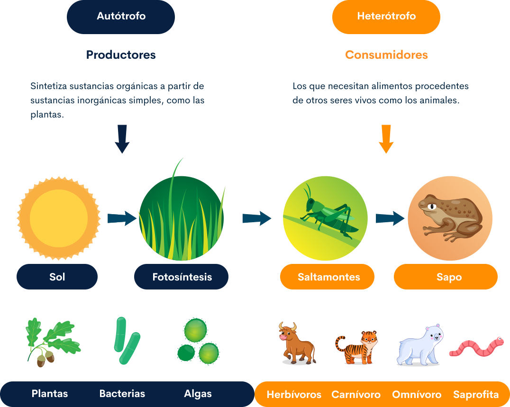-
Herbívoro: son los que se alimentan de plantas. En la cadena trófica, son los consumidores primarios. por ejemplo: la vaca y el oso panda, mientras que los que comen carne son consumidores secundarios.
-
Carnívoro: son los que se alimentan a base de carne ya sea por depredación o consumo de carroña. A pesar de que existen muchas especies de animales carnívoros, algunas subespecies no son consumidoras exclusivas de carne, por ejemplo: el tigre y el león.
-
Omnívoros: son los animales que se alimentan tanto de animales como de las plantas. Entre los mamíferos están: el cerdo, el oso polar, el erizo y el perro. En las aves están: los cuervos, la urraca, los trepadores, etc. De igual manera, el ser humano es un ser vivo omnívoro.
-
Saprofitas: organismos que vive sobre materia orgánica en descomposición y se alimenta de ella. Ejemplo: los hongos, setas, mohos y bacterias, que se encargan de la putrefacción.
Tipos de respiración
A continuación, encontrará los tipos de respiración en los seres vivos:
Respiración anaerobia
La molécula de glucosa en modo anaerobia sobrevive en ausencia de Oxígeno, pasa por un proceso de fermentación; o sea que produce alcohol, dióxido de carbono y energía.
Respiración aerobia
En modo aeróbico, en las mitocondrias se libera de la glucosa, energía con ayuda del oxígeno dando como resultado 38 ATP, dióxido de carbono y agua.
A continuación, se presenta la respiración a escala de los seres vivos. podrá conocer su tipo de respiración y la forma en la que la realiza.
-
Tipo de respiración: difusión a través de la membrana celular.
-
Forma de realización de la respiración: los gases atraviesan la membrana celular.
-
Tipo de respiración: cutánea
-
Forma de realización de la respiración: se lleva a cabo a través de la piel. Algunos animales usan este órgano para realizar el intercambio gaseoso, estos son los anélidos y anfibios.
-
Tipo de respiración: traqueal
-
Forma de realización de la respiración: se presenta en insectos y arácnidos, el intercambio gaseoso se da por medio de una serie de tubos llamados tráqueas que tienen agujeros que conectan al exterior llamados estigmas estos permiten el ingreso y egreso del aire
-
Tipo de respiración: branquial
-
Forma de realización de la respiración: se presenta en animales acuáticos es decir que toman el oxígeno del agua de su medio, para este intercambio poseen branquias.
-
Tipo de respiración: Pulmonar con sacos aéreos
-
Forma de realización de la respiración: se presenta en las aves, los sacos aéreos se llenan de aire que proviene de los bronquios donde se realiza el intercambio gaseoso.
-
Tipo de respiración: estomas con sacos aéreos
-
Forma de realización de la respiración: Las plantas igual que los animales respiran: tomando oxígeno del aire y expulsando dióxido de carbono a través de las estomas
Tipos de circulación
En el reino animal se presentan dos tipos de circulación, denominados abiertos y cerrados.
En los primeros la sangre va por unos tubos hacia una laguna central o senos.
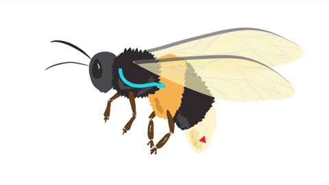En el segundo hace referencia a un sistema de vasos sanguíneos en donde la sangre sólo pasa por una sola vez.
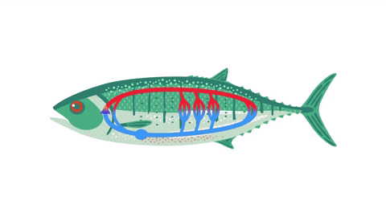Resumiendo, entre los seres vivos podemos encontrar circulación abierta y cerrada, sencilla y doble, para completar esta información. Lo invitamos a leer el estudio en el capítulo 17:
Consulte la biblioteca Digital
Fried, G. (1990). Biología. McGraw-Hill Interamericana.
Tipos de productos de desecho
A continuación, presentamos información acerca de los productos de desecho en los seres vivos:
Órganos implicados en la excreción
| Productos de desecho | Origen del producto | Órgano productor | Órgano de excreción | Medio excretor |
|---|---|---|---|---|
| Urea | Por la degradación de aminoácidos | Hígado | Riñones | Orina |
| Ácido úrico | Por la degradación de las purinas | Hígado | Riñones | Orina |
| Pigmentos biliares | Por la degradación de la hemoglobina | Hígado | Aparato Digestivo | Heces |
| Agua | Respiración celular | Conjunto de células del organismo |
|
|
| CO2 | Respiración celular | Conjunto de células del organismo | Pulmones | Aire espirado |
Para completar esta información, lo invitamos a leer el estudio en el capítulo 20:
Consulte la biblioteca Digital
Fried, G. (1990). Biología. McGraw-Hill Interamericana.
2.2 Funciones de relación
La adaptación y la forma de relacionarse los seres vivos constituyen otra de las funciones vitales que permiten su supervivencia.
Los receptores son células nerviosas que tienen como tarea percibir los estímulos y generar la respuesta adecuada, para tal efecto interpretan el estímulo ya sea mecánico, químico o térmico entre otros para enviarlo a través de un impulso nervioso.
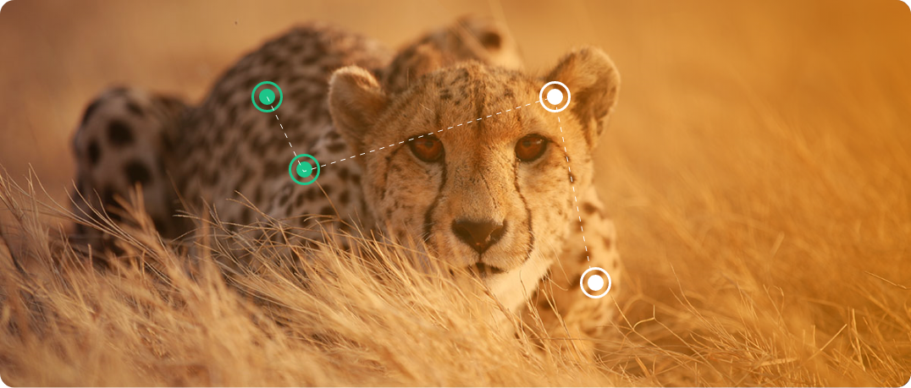Sistema musculoesquelético
Otra forma de relación de los seres vivos se da a partir de su forma, estabilidad y movimiento. El sistema musculoesquelético contiene células musculares, cartilaginosas y óseas que pertenecen al tejido conectivo.
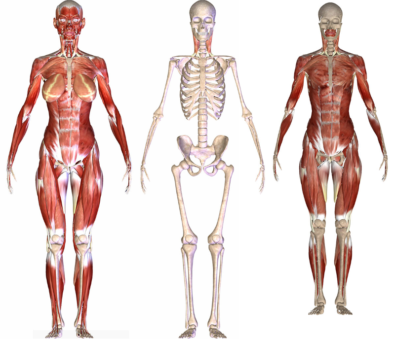Sistema esquelético
Conviene subrayar que hay cinco tipos de huesos en el esqueleto: planos, largos, cortos, irregulares y sigmoideo
Tejido muscular
Existen tres clases de tejido muscular. El primero denominado liso, constituye las paredes de los órganos huecos, el estriado presenta como su nombre lo indica estrías o fibras transversales y el cardiaco tiene una mezcla entre el liso y el estriado, todos funcionan de manera involuntaria
Funciones de relación
Las neuronas son las células especializadas del sistema nervioso que tienen como función conducir el impulso nervioso a través de señales eléctricas. Este sistema se va complejizando a medida que se avanza en la escala evolutiva de los animales.
Los receptores captan los estímulos externos e internos procesando la información y generando diferentes tipos de respuestas.
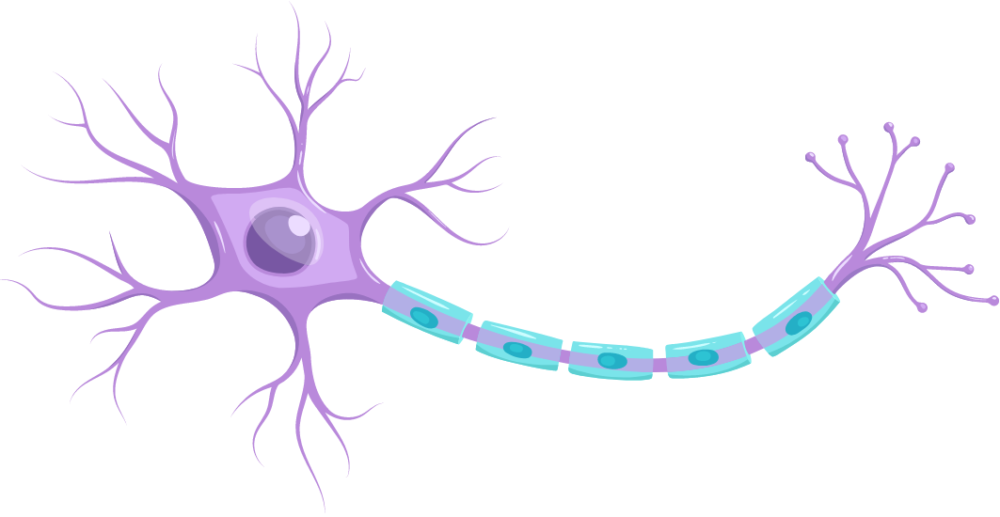Los órganos de los sentidos son los primeros receptores que determinan ciertas características al entorno inmediato a ellos, como sensibilidad a la luz, cambios de temperatura, diferenciación de sabores y texturas entre otras permitiendo una respuesta ante el estímulo.
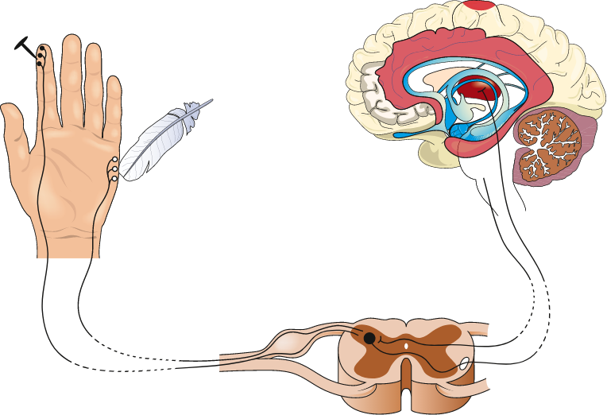Como se puede evidenciar en la siguiente imagen donde se observa autopistas sensoriales y nerviosas motoras desde un estímulo a la corteza sensorial.
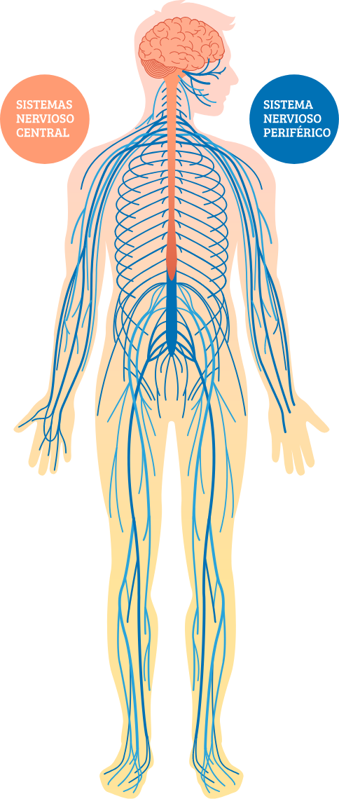Para completar esta información, lo invitamos a leer el capítulo 22:
Consulte la biblioteca Digital
Fried, G. (1990). Biología. McGraw-Hill Interamericana.
Sistema endocrino
Las hormonas son el objeto de estudio de este apartado del sistema de relación, se definen como secreciones de órganos y tejidos de los seres vivos que pasan a la sangre para regular funciones específicas como crecimiento, metabolismo, desarrollo y maduración de órganos sexuales, etc. En sitios alejados de su punto de formación, presenta similitudes con el sistema nervioso en cuanto a que abarca todo el organismo a través de una red y diferencias en cuanto a que en vez de utilizar estímulos eléctricos usa los químicos.
Sistema endocrino masculino
Sistema endocrino femenino
| Glandula | Función |
|---|---|
| Hipófisis | Controla todo el sistema endocrino actúa sobre el crecimiento y maduración de las gónadas |
| Tiroides | Regula procesos metabólicos |
| Paratiroides | Regula la concentración de sales en la sangre |
| Páncreas | Regula la concentración de glucosa en la sangre |
| Suprarrenales | Aceleran el metabolismo ayudan en el manejo de las emociones |
| Gónadas | Producción de óvulos en la hembra y de espermatozoides en el macho |
| Ovarios | Producen los óvulos y las hormonas sexuales. |
2.3 La reproducción
La reproducción es un proceso biológico que permite la generación de nuevos seres vivos. Según el mecanismo por el que ocurre la reproducción puede ser sexual o asexual.
Reproducción en los seres vivos
-
Asexual: consiste en la formación de nuevos seres a partir de un solo organismo.
-
Sexual: participan dos seres de la misma especie: un macho y una hembra.
-
Amitosis: es un tipo de reproducción asexual que contiene varios procesos.
-
Bipartición: la fisión binaria es el método por el cual los procariontes (bacterias y arqueas) y algunos protozoarios producen nuevos individuos que son genéticamente idénticos al organismo parental. En este caso, el material genético se duplica para luego separarse en dos células hijas con la misma identidad genética.
-
Gemación: es una forma de reproducción asexual donde el organismo produce uno o más brotes o yemas, que crecen y luego se separan para formar un nuevo organismo. Organismos que se reproducen de esta forma son las levaduras, las hidras de agua dulce y las anémonas de mar.
-
Esporulación: es una forma de reproducción asexual que consiste en la formación de células reproductoras o esporas, de las cuales se puede originar un nuevo individuo. Se presenta en los mohos.
-
Mitosis: proceso de reproducción de una célula que consiste, fundamentalmente, en la división longitudinal de los cromosomas y en la división del núcleo y del citoplasma; como resultado se constituyen dos células hijas con el mismo número de cromosomas y la misma información genética que la célula madre.
-
Injerto: se une un fragmento de tallo a otra planta de una variedad diferente.
-
Estaca: se corta un trozo del tallo de la planta madre para que produzca raíces y origine una nueva planta.
-
Acodo: se dobla una rama se introduce en el suelo.
Reproducción en Animales
A continuación, presentamos información acerca de los productos de desecho en los seres vivos:
-
Tipo de reproducción: gemación
-
Tipo de fecundación: no aplica
-
Organismos: corales
-
Otras características: forman colonias
-
Tipo de reproducción: sexual - hermafroditismo
-
Tipo de fecundación: interna
-
Organismos: lombriz de tierra
-
Otras características: también se reproducen asexualmente
-
Tipo de reproducción: sexual - hermafroditismo
-
Tipo de fecundación: interna
-
Organismos: planarias
-
Otras características: también se reproducen asexualmente
-
Tipo de reproducción: sexual - hermafroditismo
-
Tipo de fecundación: interna
-
Organismos: caracol
-
Otras características: también se reproducen asexualmente
Para complementar esta información, lo invitamos a leer el estudio en el capítulo 12:
Consulte la biblioteca Digital
Fried, G. (1990). Biología. McGraw-Hill Interamericana.
Actividad didáctica: tipos de nutrición
¡Pon a prueba tu conocimiento!
La siguiente actividad tiene como propósito validar los conocimientos adquiridos sobre Tipos de nutrición
IniciarActividad didáctica: tipos de respiración
¡Pon a prueba tu conocimiento!
La siguiente actividad tiene como propósito validar los conocimientos adquiridos sobre Tipos de respiración
IniciarActividad didáctica: la respiración
¡Pon a prueba tu conocimiento!
La siguiente actividad tiene como propósito validar los conocimientos adquiridos sobre La respiración
Iniciar3. Referente ecosistémico
En los sistemas del entorno vivo existen relaciones entre los componentes vivos y no vivos permitiendo un flujo de energía entre ellos.
3.1 Clasificación de los factores abióticos del medio ambiente físico
Factores energéticos
Son la fuente de energía que utilizan los seres vivos para llevar a cabo funciones vitales; puede iniciarse con la captación de luz solar para los organismos fotosintéticos o con la degradación de materia para algunas bacterias.
Factores climáticos
Se refiere a los factores que regulan las condiciones climáticas en general.
La altitud
El factor determinado por la altura de un lugar con referencia al nivel del mar.
Latitud
Este factor determinado por la distancia que hay desde el Ecuador hasta los polos se mide con el astrolabio o el sextante.
Continentalidad o Distancia al mar
Es el factor que determina la lejanía o cercanía de océanos o mares, lo que influye en la temperatura de un lugar.
Los anteriores factores inciden sobre los elementos del clima como:
La temperatura
Es el elemento del clima que nos indica la medida de calor de un lugar. Se mide con un instrumento llamado termómetro. Este nos indica los grados de calor o de frío.
La humedad y precipitaciones
La humedad es el elemento del clima que indica la cantidad de vapor de agua que hay en el aire de un lugar.
La presión
La presión se refiere a la densidad o peso del aire en un lugar. Entre más cercanos se está al nivel del mar, es mayor la presión atmosférica.
Los vientos
Es el elemento que indica los movimientos del aire en un lugar.
3.2 Factores bióticos
Los seres vivos se representan por niveles de organización los cuales cumplen funciones específicas en un espacio geográfico. Cuando varios individuos se reúnen conforman una población, ésta responde a factores ambientales y geográficos, entre ellas tenemos:
Comunidad biológica
El concepto de comunidad es más estrecho que el de ecosistema e implica necesariamente una ubicación geográfica común y funciones compartidas entre sus miembros. Sin embargo, la comunidad no es independiente del ecosistema; con mucha frecuencia la comunidad no tiene límites estrictamente definidos. Por ejemplo: los organismos que habitan un jardín o un bosque.
Cualquier cambio que afecte o favorezca a una comunidad repercute sobre todos sus miembros. Por ello, el estudio de una comunidad refleja la situación de los organismos que la componen.
Este es el ejemplo de la figura de la comunidad biológica.
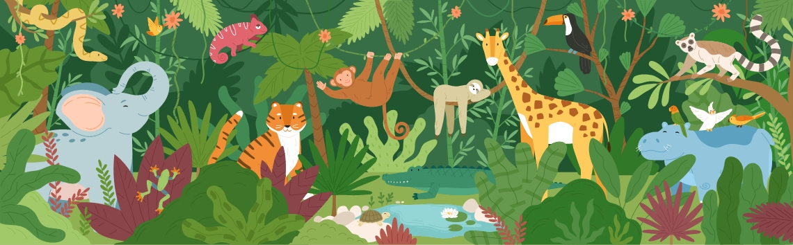Ecosistemas
Se define generalmente como el conjunto de los factores biocenosis o bióticos (organismos vivos) y los biotopos o abióticos (componentes sin vida), que interactúan en el mismo espacio y tiempo.
En el concepto de ecosistema se consideran las complejas interacciones que se dan entre organismos como plantas, bacterias, algas, animales, hongos y protozoos, entre otros, los cuales conforman la comunidad biológica. Además, se tienen en cuenta los flujos de energía y los materiales que recorren dicha comunidad. Estos pueden ser sostenibles gracias a los ciclos biogeoquímicos, que cumplen los elementos más importantes como el carbono, el nitrógeno, el oxígeno y el fósforo.
El flujo de energía en los ecosistemas se evidencia a través de las cadenas alimenticias que parten de la luz del sol permitiendo a las plantas realizar el proceso de fotosíntesis por eso se denominan autótrofas, el segundo nivel corresponde a los herbívoros o consumidores de primer orden que como su nombre lo indica se alimentan de plantas, a su vez los carnívoros se alimentan de animales diferentes a los de su especie constituyendo el tercer nivel, adicionalmente en algunos ecosistemas se pueden encontrar los omnívoros que se alimentan de plantas y animales y por último pero no menos importante están los saprofitos que se alimentan de materia orgánica en descomposición devolviendo y cerrando el ciclo y la transferencia de los nutrientes y energía.
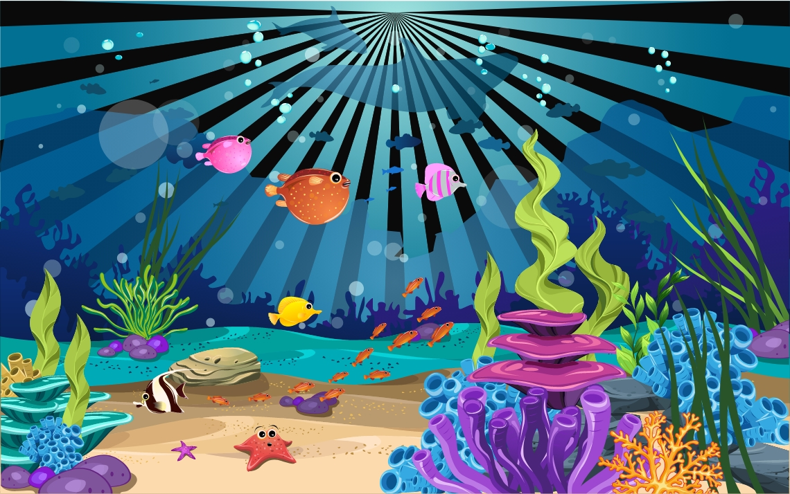Flujos de energía
Clases de ecosistemas
Acuáticos: son aquellos que se dan en presencia de agua, sea esta dulce o salada. Es decir, en la hidrósfera terrestre.
Terrestres: se ubican en la zona terrestre de la biosfera, que es el espacio en el cual habitan todos los seres vivos. La biósfera va desde una capa fina del suelo, hasta aproximadamente 8 metros sobre la superficie del planta
Abiertos: en estos se da un intercambio de materia y energía con otros ecosistemas. No están restringidos.
Cerrados: todas las interacciones ecológicas se dan al interior de los mismos. Así, no hay un flujo ni intercambio de materia ni de energía con otros ecosistemas.
Cuando un nivel o eslabón desaparece se pone en riesgo todo el ecosistema.
3.3 Ciclos biogeoquímicos
Al hablar de ciclo en el entorno ecosistémico, se hace referencia a un proceso circular en donde intervienen los seres vivos, la tierra y un proceso químico. Es un tipo de reciclaje que hace la naturaleza en el aprovechamiento de recursos como el agua, el calcio, el nitrógeno, oxígeno y el carbono entre otros
Para complementar esta información, lo invitamos a leer el estudio en la unidad 5:
Consulte la biblioteca Digital
Cervantes, M. & Hernández, M. (2015). Biología general. Grupo Editorial Patria.
4. Biotecnología
El término fue establecido por el ingeniero Húngaro Karl Ereky en 1919 considerada como alta tecnología, conformada por muchas disciplinas como: la biología, bioquímica, genética, virología, agronomía, ecología, ingeniería, física, química, medicina, farmacología, veterinaria, entre otras. Abarca técnicas como cultivo de células y tejidos, uso de enzimas, fermentación microbiana, procesos como la transformación, la clonación de frutales, procesos biotecnológicos de la cerveza, entre muchos otros que la hacen calificar como una de las posibles soluciones para prevenir daños ambientales actuales.
Visualiza el video: la industria biotecnológica se ha convertido en una oportunidad para los países en desarrollo como Colombia donde se implementan cultivos In vitro en el departamento del César con el apoyo del SENA.
Esta ciencia ha sido aplicada en algunos sectores como el económicos y ambiental generando una serie de productos de mejor calidad y más amigables con el medio ambiente. Ha logrado diversos avances en la salud como producir nuevos medicamentos o mejorar diagnóstico de enfermedades como el Sida.
Existen numerosos conceptos de la biotecnología, una de las primeras definiciones aceptadas internacionalmente para Biotecnología es la publicada en 1982 por la Organización para la Cooperación y el Desarrollo Económico (OCDE) utilizada por Thieman (2010) donde se define como “la aplicación de los principios de la ciencia y la ingeniería al tratamiento de materias por agentes biológicos en la producción de bienes y servicios” (pág. 25).
Visualiza el video sobre el desarrollo de productos biotecnológicos en Colombia.
4.1 Ventajas y desventajas
La Biotecnología es una ciencia de amplio espectro y puede ser beneficiosa en su aplicación para solucionar muchas problemáticas y mejoras de otras, pero también puede presentar algunas desventajas. A continuación se describirán las más significativas:
Ventajas
Mejora la salud demostrando que ha contribuido con investigaciones y generación de medicamentos que favorecen la calidad de vida con respecto a algunas enfermedades. Un ejemplo es la creación de microorganismos para sintetizar las cadenas formadoras de insulina.
Reduce el hambre ya que gracias a esta se puede cultivar en terrenos que no eran cultivables por condiciones del suelo.
Incrementa la flexibilidad en la forma de cultivos ya que gracias a la biotecnología se ha logran cultivos mejorados y resistentes a plagas.
Ayuda a reducir la contaminación ambiental ya que contribuye a la descontaminación por residuos en el medio ambiente, tratamiento de aguas residuales con bacterias, limpieza de hidrocarburos aplicando microorganismos, entre otros.
Visualizar el video de Orbiotec como una empresa de Villavicencio (Colombia) que desarrolla productos biotecnológicos que reducen el impacto ambiental de cultivos agrícolas. Los ingredientes activos mejoran la calidad del suelo y descontaminan las aguas. En 2015, la empresa fue reconocida con el premio Confecámaras y ProColombia en la categoría innovación y logística por los beneficios que trae para cultivos en Costa Rica, Ecuador, Perú, Panamá, Chile y Uruguay.
Desventajas

Podría ser usada como armas biológicas de destrucción masiva.
A pesar de que la biotecnología actúa favorablemente, no se conoce a ciencia cierta si con el transcurrir del tiempo el introducir microorganismos diferentes al medio puedan tener consecuencias posteriores negativas, provocar daños colaterales como afectar la evolución de las especies y sus relaciones con el medio o que daños puede producir al medio ambiente los cultivos modificados o la afectación que puede tener en el ser humano cualquier modificación genética.
4.2 Aplicaciones
La aplicación de la Biotecnología no es nueva su aplicación viene desde tiempos remotos en la historia de la humanidad. Ejemplo: Fermentación de granos de cereales para producir una bebida alcohólica de una aldea neolítica de Jiahu China 7000 aC , Producción de pan con levadura en Egipto 2000-1200 aC. La aplicación de Biotecnología es muy diversa, se aplica en farmacia, medicina, tecnología de los alimentos, veterinaria, tratamiento de residuos y la agricultura.
De acuerdo al área de aplicación ella presenta una clasificación determinada por colores, así:
Biotecnología roja: asociada a la salud animal seres humanos y vegetal. Ejemplo: producción de antibióticos.
Biotecnología blanca: vinculada a los procesos industriales. Ejemplo: producción de nuevas energías
Biotecnología verde: aplicada al sector agrícola y ambiental, esta trata de mejorar procesos en la agricultura, ganadería entre otros, siendo amigable con el medio ambiente contribuyendo a una producción limpia. Ejemplo: creación de biofertilizantes, aplicada a la biorremediación (aplicación de microorganismos para destrucción de contaminantes ambientales).
Biotecnología azul: relacionada con el mundo marino y organismos acuáticos exploración y explotación donde el uso de estos conlleva a buscar alternativas de solución a las problemáticas que se puedan presentar.
Dependiendo de las necesidades que surjan y nuevas aplicaciones también surgirán nuevos colores en la clasificación de las biotecnologías, como por ejemplo:
Biotecnología gris: relacionadas con el manejo de residuos.
Biotecnología dorada: vinculada a las herramientas informáticas.
Biotecnología marrón: se enfoca en el tratamiento de los suelos desérticos mediante la aplicación de los microorganismos aplicados.
Biotecnología naranja: muy importante en estos momentos ya que es la que se vincula con la enseñanza de la biotecnología para producir los bienes y servicios para satisfacer nuestras necesidades actuales.
Biotecnología púrpura: estudia la parte legal de la biotecnología.
Biotecnología amarilla: dedicada a la búsqueda de mejoras de los productos.
Biotecnología negra: investiga sobre aquellos microorganismos que son causantes de enfermedades y por lo tanto resulta ser una biotecnología dedicada a producir armas biológicas.
Glosario
Ácido nucleico:polímeros compuestos por nucleótidos, que en los organismos vivos se basan en uno de dos azúcares, ribosa o desoxirribosa, lo que da origen a los términos ácido ribonucleico (RNA) y ácido desoxirribonucleico (DNA).
Biodiversidad:el término "biodiversidad" se refiere a la diversidad de especies tanto vegetales como animales que viven en un espacio determinado.
Descomponedores:son los organismos que se alimentan de restos orgánicos transformándolos en inorgánicos. Los descomponedores más conocidos y destacados son los hongos y las bacterias, pero en este grupo entran las babosas, lombrices y algunos insectos.
Enzima:las enzimas son moléculas de naturaleza proteica que catalizan reacciones químicas. Casi todos los procesos en las células necesitan enzimas. A las reacciones mediadas por enzimas se las denomina reacciones enzimáticas.
Estímulo:cualquier cosa en el medio ambiente que causa que una cosa viviente reaccione.
Homeostasis:la tendencia de un sistema a mantener la estabilidad interna.
Precipitación:en meteorología, la precipitación es cualquier forma de hidrometeoro que cae de la atmósfera y llega a la superficie terrestre. Este fenómeno incluye lluvia, llovizna, nieve, aguanieve, granizo, neblina ni rocío, que son formas de condensación y no de precipitación.
Material complementario
| Nombre del documento o material. | Tipo de material. | Enlace del Recurso. |
|---|---|---|
| Rodríguez, M., Busch, M., & Dadón, J. (2010). De moléculas a células: Entendiendo la estructura de los seres vivos. | Capítulo 3 | Ver documento |
| Fried, G. (1990). Biología. McGraw-Hill Interamericana. | Capítulo 12, 17, 20 y 22 | Ver documento |
| Cervantes, M. y Hernández, M. (2015). Biología General. Grupo Editorial Patria. | Unidad 5 | Ver documento |
Referencias bibliográficas
Audersirk T, Audersirk G & Byers B. (2009). Biología: La vida en la tierra.
Campbell N. y Reece J. (2007). Biología. Editorial Panamericana.
Curtis H. (2008). Biología General. Ed. Médica Panamericana.
Lodish H., Berk A., Kaiser C., Krieger M., Bretscher A., Ploegh H., Amon A. & Scott M. (2016). Biología Celular y Molecular. Editorial Médica Panamericana